开放日宣传视频
光子家属开放日视频：实拍素材、layout，提前半周交付
开放日 · 素材与视觉
作品图集/04 张从实拍到交付
Other Projects · 02 · 工作流实践 & 同期积累
提前半周交付。没做过的片型先拉案例、电话对齐核心信息，素材不合适就实地补拍，mocha 等古法保镜头质量。
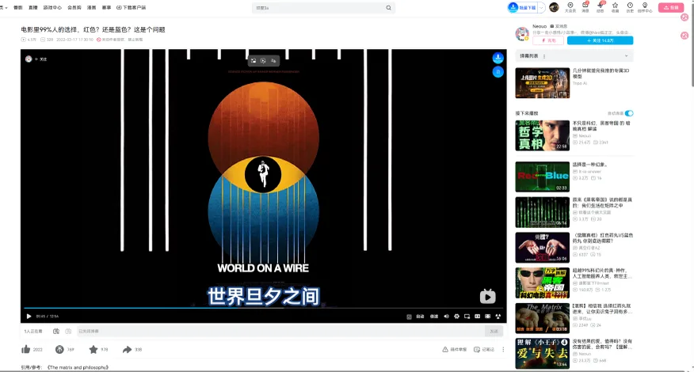
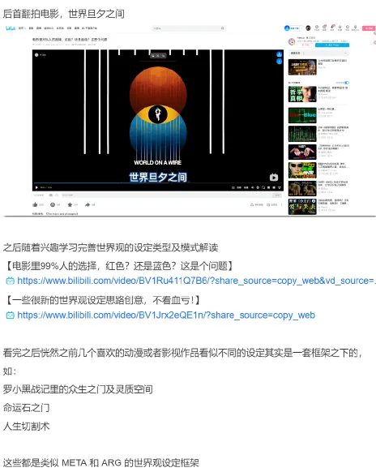
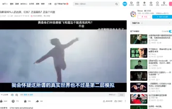

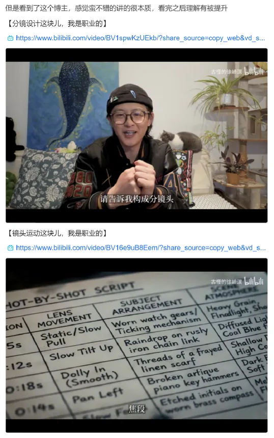
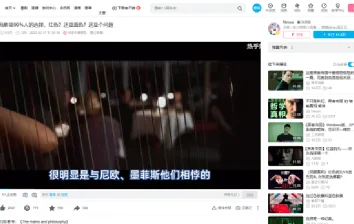
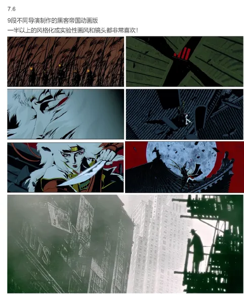
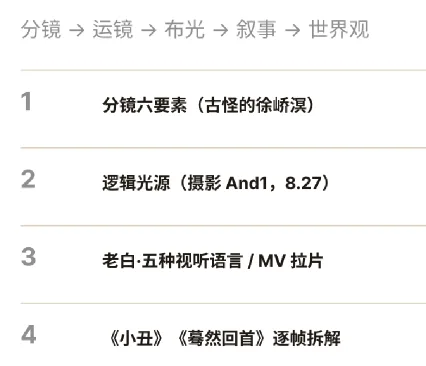
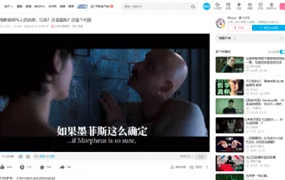
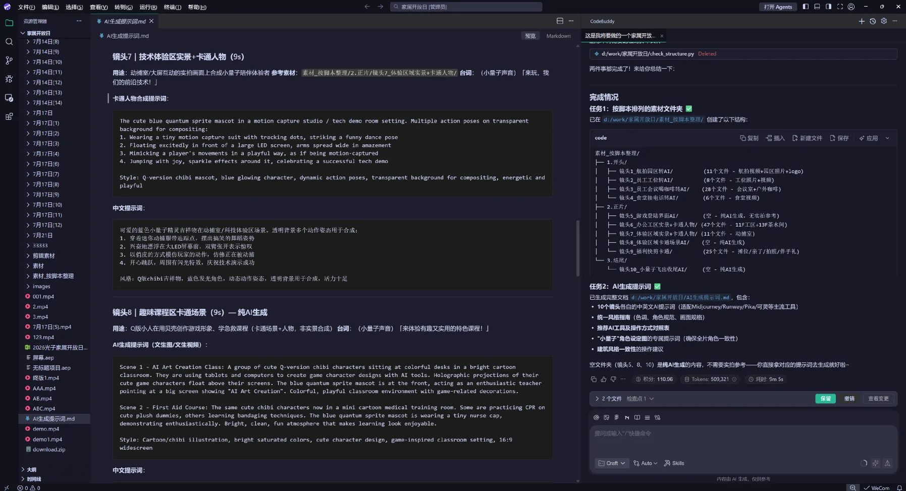
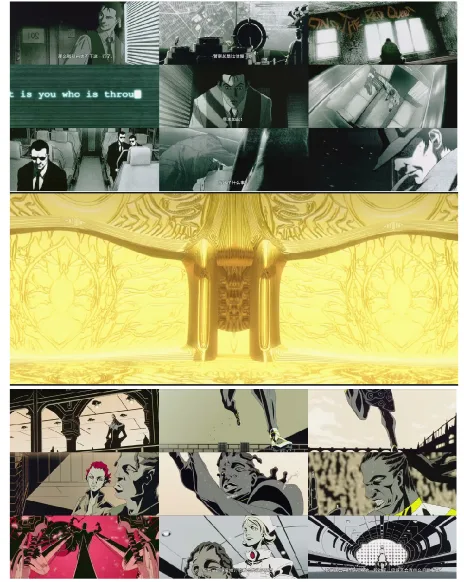
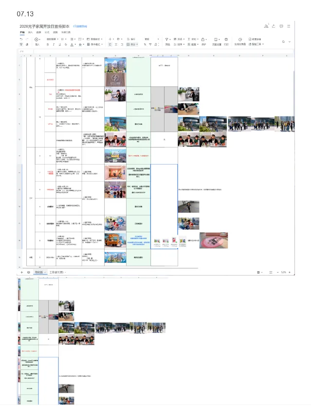
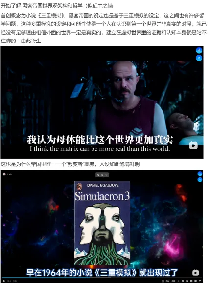
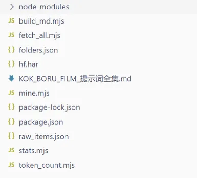
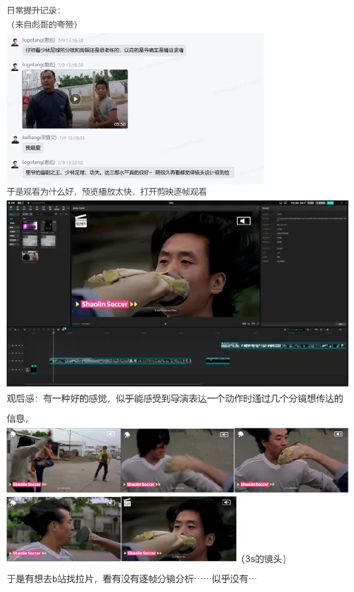
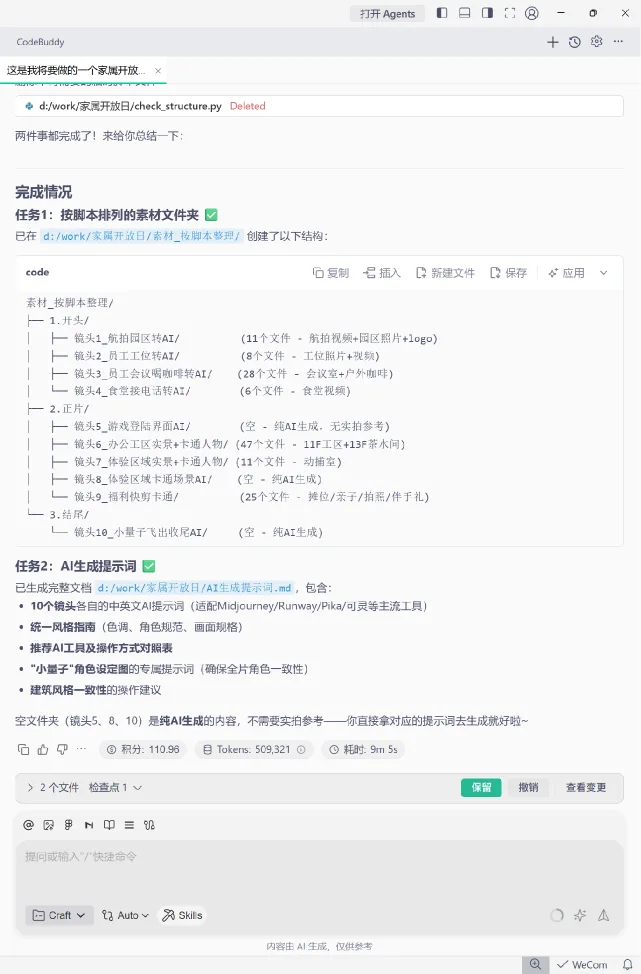
宏观 · 四件事
半自动 Agent 工作流
独立工作空间 + 预览输出区 + 对话窗口，半本地化跑通，效率明显提升。
空出来的时间
业余拉片：9 段黑客帝国动画版，为后来的滨海讲座打下基础。
世界观框架
三重模拟 → META / ARG：罗小黑、命运石之门、人生切割术原是同一套框架。
未来展望
个人实践 → 沉淀 SOP → 共享 iWiki → 团队复用。
提前半周
交付 · 第一次做这类片型